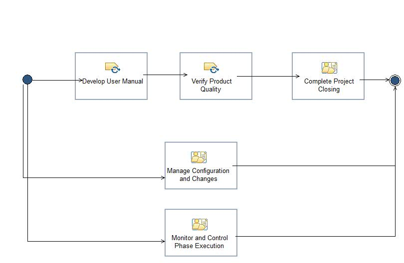

Phase: Closing
Fourth Phase of the PIM whose main purpose is to to ensure that software is available for its users.
Description
Work Breakdown Structure
Team Allocation
Work Product Usage
Workflow

Work Breakdown